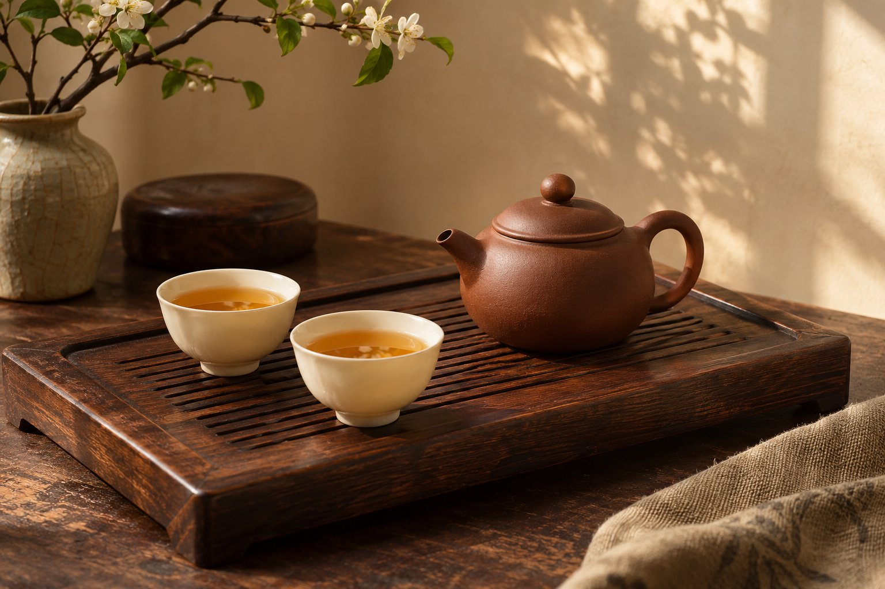
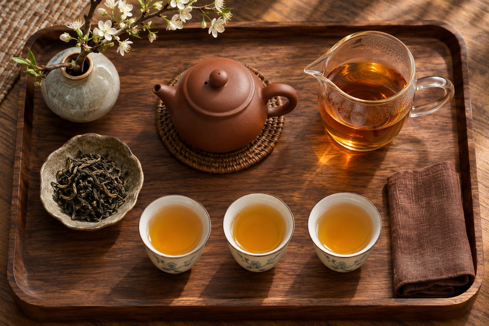
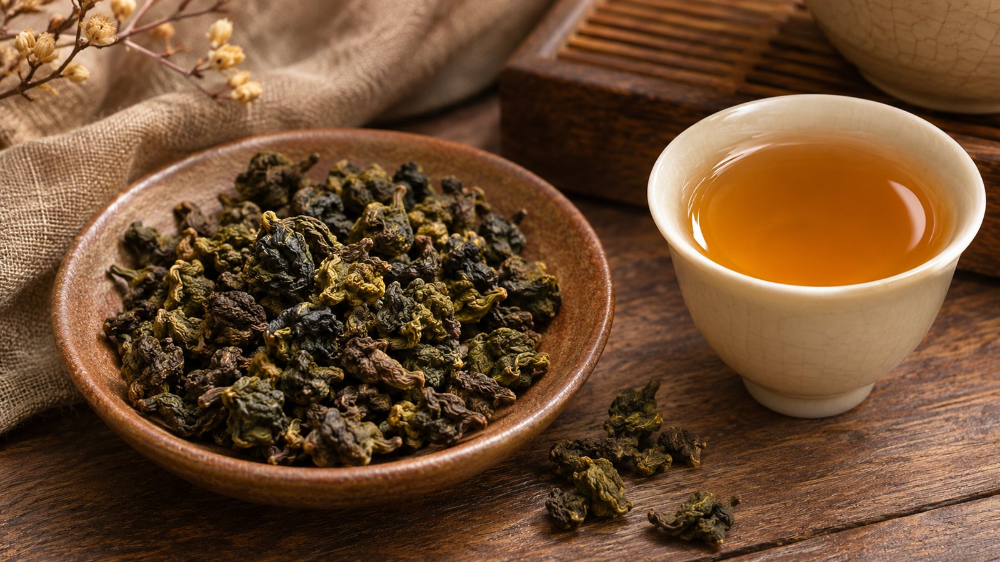

Прогрейте
Чистая тёплая посуда помогает удержать температуру. Слейте воду перед завариванием.
Один лист раскрывается по-разному. Начните с короткого пролива и прислушайтесь к вкусу.
Пример для улуна: 5 г / 100 мл / 90 °C. Это рекомендация, не таймер.

Пример — концепт для портфолио. Чай, посуда, характеристики и цены демонстрационные.
Чистая тёплая посуда помогает удержать температуру. Слейте воду перед завариванием.
Начните с малого времени, полностью слейте настой. Следующий пролив настраивайте по вкусу.
Оцените аромат, плотность и послевкусие. Меняйте по одному параметру за раз.
Для начала достаточно посуды для заваривания, сливника и чашек. Количество предметов не определяет качество чаепития.
Раскрывает аромат и позволяет быстро отделить настой от листа.
Собирает весь пролив, чтобы настой в чашках был одинаковым.
Позволяет почувствовать температуру, аромат и текстуру.
Организует пространство и удерживает случайные капли.


Посуда упаковывается отдельно от чая. При получении осмотрите края и крышки, проверьте целостность каждого предмета.
Вернуться к чайной полке